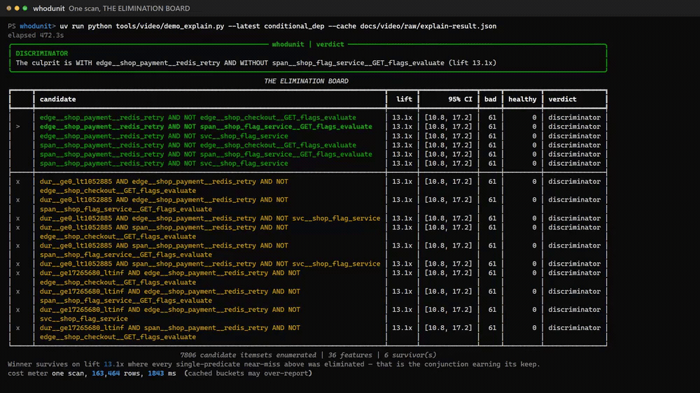
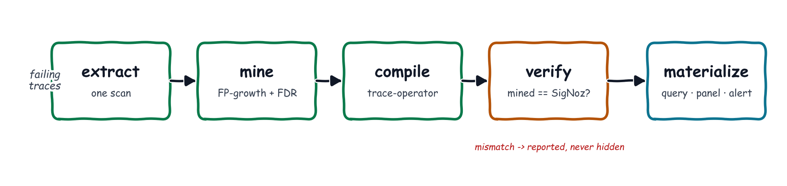
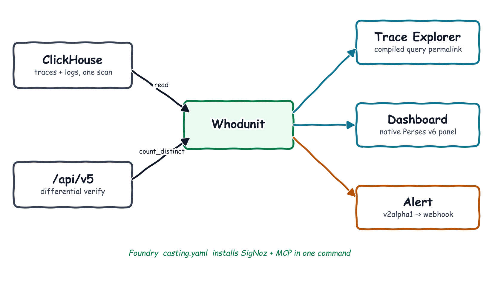

mined
61
Point Whodunit at a cohort of failing traces. It mines the structural pattern that
separates them from healthy ones, compiles the winner into a valid SigNoz
builder_trace_operator query, runs that query back against the live engine to
prove it, and arms it as an alert. The deliverable is never a paragraph — it's a Query Builder artifact
you keep.
Everyone can show you the difference. Only SigNoz can arm it.
docs/video/raw/explain-result.json. Nothing is fabricated for the demo,
and there is no LLM in the runtime.
The "compare two cohorts of spans" problem is well-trodden. What's striking is how uniformly every product stops at the same place: a ranking a human then re-types by hand. Nobody compiles the mined finding back into the query grammar, verifies it against the live engine, and arms it as a standing alert.
| Product | What it does | Where it stops |
|---|---|---|
| Honeycomb BubbleUp | ranks flat attribute distributions, selection vs baseline | flat only; no structure; no executable output |
| Datadog Trace Patterns | groups spans by structure into recurring patterns | runs on a 1% sample, excluded from monitor evaluation |
| Datadog APM Recommendations | zero-config N+1 / retry detection | a recommendation card, not a query |
| Chronosphere DDx Lightstep Change Intelligence | baseline-vs-deviation attribution | closed source; verdict panel only |
Grafana Traces Drilldown compare() | selection vs baseline attribute differences | ranks attributes; no alertable artifact |
| TraceContrast (ICSE 2024) | contrast sequential pattern mining | a paper; offline; no emitted query |
One ClickHouse scan in, a verified Query Builder artifact out. Every stage is plain code — pattern mining and statistics, not generation — so the same input plus seed always lands the identical verdict hash.

One clickhouse_sql scan builds a per-trace_id boolean feature matrix — span
predicates from raw duration_nano, parent_span_id edges, ancestor walks, and
log features joined by trace_id from the same store. A case-control matcher picks the
healthy cohort on the selection axis, so the discriminator can never just be the selection axis.
Hand-rolled FP-growth enumerates the complete itemset lattice before any test runs — so Benjamini–Hochberg FDR control is valid, not post-selection inference. Ranks by lift with bootstrap CIs gated on effect size, and treats abstention as a first-class outcome.
The winning itemset is lowered into a valid builder_trace_operator envelope, respecting
engine constraints recovered by probing the live v0.132.2 engine: operator direction, left-bias, and
trace-scoped NOT. Inexpressible findings are refused, not faked.
The synthesized query is not trusted. It runs back through /api/v5/query_range as a scalar
count_distinct(trace_id) and is asserted equal to the miner's own local count. That
differential receipt is the whole thesis in one row.
Ships as artifacts you keep: a Trace Explorer permalink, a native Perses v6 dashboard panel, and an armed v2alpha1 alert rule whose webhook fired end-to-end at t+182s.
Whodunit reads, computes against, and writes back into all five surfaces — and installs through Foundry in one command.

| Surface | How Whodunit uses it |
|---|---|
| Traces + Logs | One clickhouse_sql scan joins traces ⋈ logs by trace_id — a cross-signal join impossible on Tempo + Loki (separate stores). |
| Query Builder | The output is a first-class builder_trace_operator expression, verified via /api/v5/query_range. |
| Dashboards | The discriminator is emitted as a native Perses v6 panel. |
| Alerts | Armed as a v2alpha1 WARN/CRIT rule; the fired webhook was caught end-to-end at t+182s. |
| Foundry | deploy/casting.yaml installs SigNoz and the MCP server in one command. |
The mined finding is not trusted on its word. The compiled query is executed against the live engine and asserted equal to the miner's own local count. Seed 778: 7,806 candidate itemsets enumerated over 36 features leave 6 survivors, from one scan of 163,464 rows in 1,843 ms — then 46,805 rows to verify the winner.
Six scenarios, run live against the stack, scored against a machine-checkable ground-truth manifest, versus a properly-implemented (not strawman) BubbleUp-style flat baseline. Whodunit nails the conjunction flat tools structurally cannot see, ties honestly where a single feature is enough, and abstains rather than inventing a culprit.
| scenario | ground truth | whodunit | recall | flat baseline precision / recall | outcome |
|---|---|---|---|---|---|
| conditional_dep | discriminator | discriminator ✓ | 1.00 | 0.23 / 1.00 | baseline fails |
| new_edge | discriminator | discriminator ✓ | 1.00 | 1.00 / 1.00 | baseline ties |
| cache_bypass | discriminator | discriminator ✓ | 1.00 | 1.00 / 1.00 | baseline ties |
| retry_storm | abstain | partial ✓ | — | 0.21 / 0.99 | baseline fails |
| decoys | abstain | abstain ✓ | — | 0.29 / 0.85 | baseline fails |
| null_scenario | abstain | abstain ✓ | — | 0.14 / 0.77 | baseline fails |
cache_bypass
originally abstained — the pure-absence discriminator was soundly refused by the compiler while the
miner's parsimony prune dropped the compilable superset. The fix recovers the best compilable
near-miss at a tied confidence floor; the original failure is preserved in
benchmark/ISSUES.md #2.
Finding that seam and fixing it in the open is exactly what this project is for.
The flagship replay is seed 778 (61 bad traces). The benchmark aggregates six scenarios at their own seeds 101–106 — counts vary with seed; the invariants do not. Full table: benchmark/REPORT.md.
A tool that never abstains is a tool that lies. These are the seams, documented rather than papered over.
The trace-operator algebra has no per-trace cardinality qualifier, so "2–5 retries vs 1" can't be a presence discriminator. Whodunit abstains rather than fabricate one.
A bare NOT C returns zero spans and is refused. Absence is only expressible anchored to a
positive operand — A && NOT C.
Ground truth comes from a manifest, not human judgement — a methodology strength (exact labels) and a caveat (no real-world messiness beyond the injected decoys). Hidden synthetic data is fatal; disclosed is standard fault-injection.
Operator left-bias, => / -> direction, trace-scoped NOT,
and clickhouse_sql time-window behaviour are respected by the compiler and surfaced by the
differential receipt.
Seven steps: point, mine, compile, verify, materialize, prove determinism, benchmark. Every number read from the committed seed-778 run. No install, no backend, no live SigNoz required.